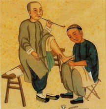

La Réflexologie Plantaire est une méthode douce et naturelle dont le but est de rétablir équilibre et bien-être. Douce et non-intrusive, car avec ses mains pour seul outil, le Réflexologue stimule des Zones Réflexes situées sur et sous les pieds. Naturelle, parce qu’elle met à contribution les propres ressources du corps humain pour favoriser son auto-guérison. S’il s’agit d’une méthode curative (réparatrice) efficace, la Réflexologie est fortement conseillée comme méthode préventive. En effet, en renforçant notre équilibre énergétique, la Réflexologie prévient l’apparition de blocages ou dérèglements, responsables du déclenchement de maladies.
On peut comparer le principe de fonctionnement de la Réflexologie Plantaire à un système électrique : La Zone Réflexe serait le commutateur – Le système nerveux les câbles et les relais – L’organe ciblé l’appareil connecté.
Méthode ancestrale méconnue de notre culture principalement axée sur la médecine occidentale conventionnelle, la Réflexologie Plantaire était déjà pratiquée en Inde il y a plus de 5000 ans, en Egypte plus de 2500 ans avant JC et en Chine au IVème siècle avant JC. Egalement pratiquée par les amérindiens, les premières traces trouvées en Europe datent de la fin du XVIème siècle. C’est seulement au XXème siècle qu’elle fera l’objet d’études poussées pour finalement se développer en France au début des années 1990.
Ouverte à tous, la Réflexologie Plantaire s’adresse à toutes les personnes de tous âges en quête de solutions naturelles sans effet
secondaire et qui souhaitent réduire voire stopper leur consommation médicamenteuse, que ce soit par pure conviction ou pour pallier
à des traitements difficilement supportables.
La Réflexologie Plantaire ne saurait en aucun cas se substituer au diagnostic d’un médecin et à des traitements lourds. Elle constitue
cependant un remède complémentaire non négligeable, malheureusement encore mésestimé par le corps médical conventionnel.
Fortement déconseillée aux femmes enceintes pendant les 3 premiers mois de grossesse et aux personnes présentant des lésions au niveau des pieds, la Réflexologie Plantaire sera pratiquée de manière raisonnée sur les personnes en crise (allergies, inflammations diverses) et sous traitement lourd.
Nathalie Moreau, Réflexologue certifiée agréée par la Fédération Française des Réflexologues.
Formée aux Techniques de la Réflexologie Plantaire à l’école E.T.R.E. , j’ai complété mon cursus par une formation en Réflexologie Emotionnelle; corps et esprit étant étroitement liés. A l’image de l’être humain, la Réflexologie Plantaire présente une palette exponentielle de caractéristiques et constitue une mine inépuisable d’explorations en remises en cause… de mieux-être en bien-être !
Installée à Villette de Vienne (entre Vienne et Lyon) depuis Novembre 2016, je travaille en étroite collaboration avec un Ostéopathe Bertrand Reboul et coopère avec quelques Kinésithérapeutes. En effet, avec un accès aisé à tous les principaux organes, glandes et systèmes du corps humain grâce aux Zones Reflexes, la Réflexologie Plantaire s’avère très complémentaire aux manipulations plus « mécaniques » d’un Kinésithérapeute ou d’un Ostéopathe.
Cabinet médical
159 Route de Marennes
38200 Villette de Vienne
06 75 52 79 66
La Réflexologie Plantaire permet de soulager différents types de troubles comme insomnies, mauvaise circulation sanguine, problèmes
respiratoires ou digestifs, dysfonctionnements d’ordre urinaire ou génital, dérèglements hormonaux ou encore douleurs musculaires,
articulaires ou dentaires….. la liste est non exhaustive !
Cette méthode aide à libérer du stress, des toxines, des tensions, ainsi que des émotions négatives souvent à l’origine des troubles cités
précédemment.
De plus, une séance de Réflexologie Plantaire dynamise votre organisme et relance le flux énergétique tout en harmonisant vos fonctions
vitales.
Pour un moment de détente, je propose des séances de relaxation de 30 minutes :
Jambes lourdes et/ou gonflées, œdèmes et assimilés, pensez au drainage lymphatique, séances de 30 minutes :
Une séance « Harmonie » de 45 minutes vous aidera à maintenir Bien-Etre et Equilibre :
Pour une séance Mieux-Etre, dans le cadre d’une Réflexologie curative, prévoyez 60 minutes (et 90 minutes pour un premier rendez-vous) :
€30
€30
€40
€50
De même que chaque personne est unique, chaque cas est particulier, par conséquent chaque traitement sera adapté sur mesure. Concentré sur les causes possibles d’une maladie, le réflexologue s’intéresse principalement à la personne et peu à la maladie (ne soyez donc pas surpris s’il vous pose une multitude de questions qui à priori n’ont rien à voir avec votre préoccupation du moment !) Pour une amélioration durable il convient de prévoir plusieurs rendez-vous. Un déblocage peut s’opérer immédiatement ou nécessiter 2 ou 3 séances, notamment selon la réceptivité de la personne ou l’antériorité du dérèglement. Une consolidation pourra ensuite être réalisée sur 2 ou 3 séances plus espacées dans le temps.
4 séances sur 2 mois : 180 €
6 séances sur 3 mois : 260 €
5 séances sur 12 mois : 225 €
Pour les forfaits, règlement à l’avance ou régularisation sur la dernière séance
Les tarifs indiqués sont soumis à accord préalable pour les visites à domicile
Renseignez-vous auprès de votre Mutuelle, une prise en charge est possible !
Pour tout parrainage, remise de 10% sur votre prochaine séance
Offrez une séance de Réflexologie Plantaire avec la Carte Cadeau 30, 40 ou 50 €